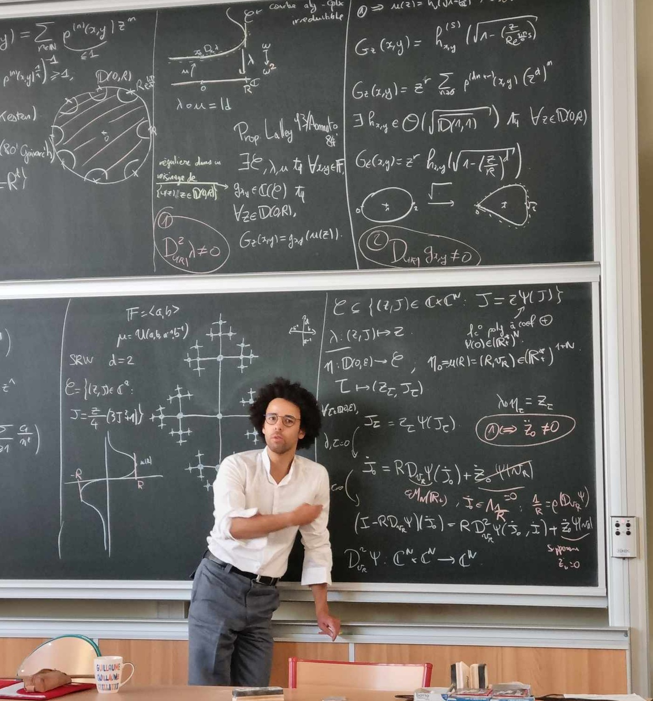

French
Personal webpage of Chevalier Guillaume

I just completed a Ph.D under the supervision of Jean-François QUINT at the IMAG and the IMB. My manuscript can be found here.
I am currently looking for a postdoctoral position and I am open to any type of collaboration. You can find my resume here .
About me
I am passionate about Mathematics, but since I had to make a choice, I chose to study random walks on groups.
I study random walks on spaces with negative curvature. The objective of my thesis was to obtain new inequalities for the return probabilities on such spaces.
I have a strong interest in complex analysis, probability, dynamical systems, and geometry, and I am eager to begin new projects at the interface of these fields.
(Pre)publications
Projects ongoing
- Marco VS Polo: Une étude des représentations du plan projectif (vulgarisation)